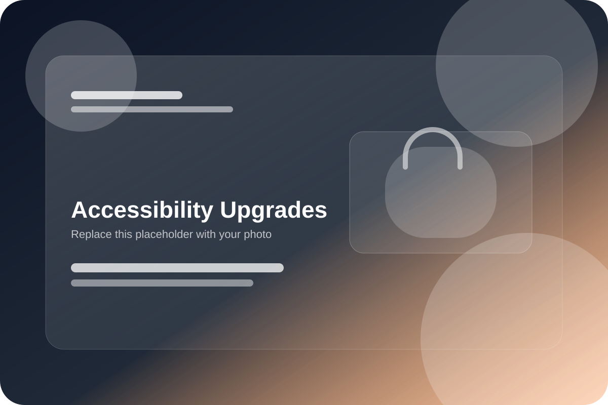

Support features
Grab bars and other supportive details can become central to the comparison path.
Explore provider options for support-focused walk-in tub upgrades, compare feature priorities, and request quotes based on comfort, mobility, and safer bathroom use.

Grab bars and other supportive details can become central to the comparison path.
Seat comfort and practical day-to-day use often influence which providers feel most relevant.
Threshold feel and easier movement through the space may shape upgrade priorities.
Some comparisons focus on making the overall bathing experience feel more secure and comfortable.
Homeowners often compare providers based on how clearly support-related needs are reflected, whether the upgrade path seems aligned with the room layout, and how the quote process is framed.
Move into a more focused comparison path based on real support and comfort priorities.